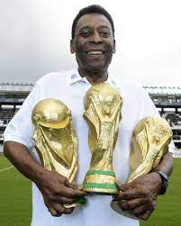

Lionel Messi After Maradona from Argentina, Messi is considered as his successor in football. Lionel Messi born in 1987 started playing professional football at a very young age and has already played four World Cups. Speed, technique, and intelligent play are his prime attributes. Alike Maradona, Messi is also known for his free kicks with left foot. He is yet to win the World Cup for his national team. Currently, he plays for Paris St. Germain at club level and holds almost every club record. Most geniuses of the game have rated him as the best footballer ever. Lionel Messi has won top FIFA award three times and Ballon d’Or four times (2009, 2010, 2011, 2012), which is the highest for any player till date.

Cristiano Ronaldo The Portuguese football player was born in 1985 and started playing professional football at the age of 12. His heroics soon became known globally and the manager of Manchester United roped him for season of 2003-04. Accurate passing, excellent chop and scissor moves are a couple of his exceptional football playing skills. At club level, he is currently playing for Real Madrid and Manchester United was his former. He is believed to be the best finisher of all time by greats. He held the record for highest number of goals in European championship for a long time until Messi broke it.

Pele alias Edson Arantes do Nascimento is a great Brazilian footballer. He holds the record for being the youngest player to score in the World Cup. At the age of 17, he opened the goal count against Wales in 1958. Since then, there was no looking back for him. He represented Santos at club level since 1956 and called quits to the game in 1977. He is fondly called as "The King of Football", and port city Santos celebrates November-19 as Pele day that marks the day he scored his 1000th goal.
Diego Maradona Speed with technique and a magical left-foot made Argentine football player, Diego Maradona, a legend. He was called "The Golden Boy of Football". He started playing football at the age of 15 for Argentinos Juniors club. Later, he played for Barcelona, Sevilla, and Napoli clubs. He made headlines when he scored a controversial hand-ball goal in 1986 World Cup final. He scored 34 goals for the national side during his 17-year long career.
George Best Born in Northern Ireland, George Best, was one of the finest and greatest players of all time. He was equaled with Pele during his playing days. He debuted for Manchester United club at 17. Speed, skill, and aggressive style of play were his attributes. However, his off-field liaisons and lifestyle were too much for a club like Manchester United to accept. Hence, he was dropped from the team and later injuries forced him to quit the game at a very early age of 27. Unfortunately, this legend never got an opportunity to represent his country on bigger stage.
Ronaldo The Brazilian striker was considered next to Pele in legends of the game. He took part in four World Cup finals and won twice. Ronaldo is the second highest goal scorer for his nation with 62 goals. He is one amongst the players who won FIFA World Player of the Year three or more times. Ronaldo won Ballon d’Or twice, once in 1997 and again in 2002. Barcelona, Real Madrid, Inter Milan, and PSV are few popular clubs that he played for and finally retired in 2011 after a long streak of injuries.
David Beckham Bend it like Beckham! The popular saying was coined with reference to Beckham’s style of bending free-kicks. He was known for his accurate passing and creating opportunities for strikers to net the ball. Beckham started playing professional football at the age of 17 for Manchester United. He captained England for six years. In his 20-year long career, he represented top clubs like Real Madrid, LA Galaxy, and PSG other than Manchester United. Off the field, he was also popular for his stylish lifestyle and charity. He retired from professional football in 2013.